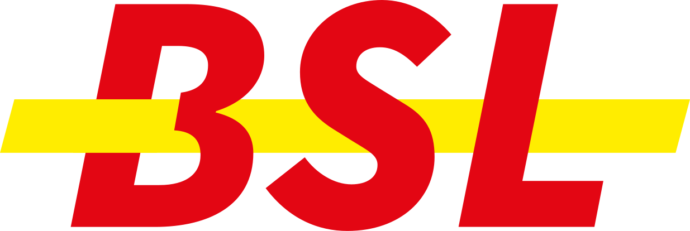

♔ Salut !⚋⚋⚋⚋⚋⚋⚋⚋⚋⚋⚋⚋⚋⚋
Bienvenue sur mon site ultra hype. Je me présente, Baptiste, je suis graphiste et aussi artiste plasticien. J'ai fait un Master en Edition et maintenant je travaille pour un festival et de temps en temps pour des maisons d'édition de bande-dessinée alternative.
Je suis spécialisé en typographie, en édition, en pré-print et en web, puis je sais aussi faire tout ce que les graphistes font d'habitude... comme du traitement et de la création d'image et tous ces trucs un peu technico-créatifs, la gestion web et résaux sociaux, etc.
De ce qui est de ma pratique artistique, je fais aussi un peu de tout, mais souvent ça tourne autour de la peinture ou du textile et parfois des deux en même temps. Je travaille aussi quelques fois en atelier pour personnes handicapées, et ça, c'est vachement chouette.
Là j'ai des projets qui commencent à se mettre en route et bientôt je vous tiens au courant de tout ça par des communiqués complètement disproportionnés qui collent à ma personnalité à la fois entreprenante et ancrée à mes racines (ex: fanfare des bleus de Dalhem pour distribuer des flyers).
Ça m'arrive aussi de faire des trucs entre le graphisme et l'art plastique, comme des puzzle, des tapis ou des pénis en 3D sur Blender. Et je crois que là est ma force.
Sinon en dehors de ça, je fabrique le pain à la farine d'épautre comme un demi-dieu grec, mais je ne sais absolument pas réparer un vélo.
Merci d'avance d'être passé ici !